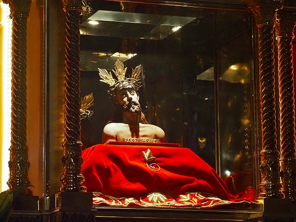
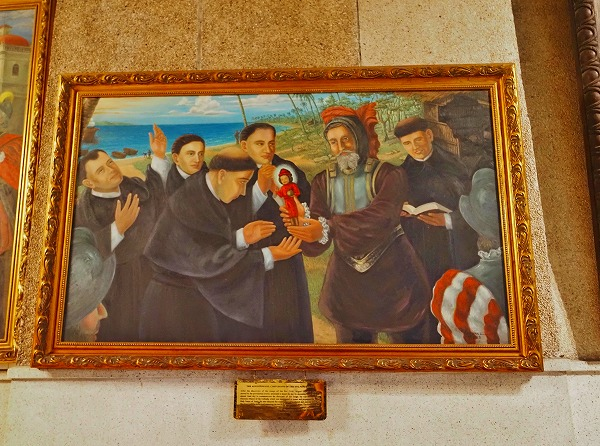

セブ島での珍寺修行、最初に紹介するのはセブ島最古にしてフィリピン最古の教会、サントニーニョ教会である。
つかその前に愚痴言わせてもらってイイっすか？
実はこの日は既に旅3日目。
じゃあ1日2日目は何やっていたのよ？というごもっともな質問にお答えします。
1日目
SIMカードの登録がウルトラ面倒臭く、開通するため数時間市内のSIM屋で過ごす。
大手宿泊サイトで予約していたホテルに急遽泊まれなくなり、慌てて他の宿を探す。
2日目
夜中の2時半に叩き起こされる。
さして綺麗でもない海岸で4時間途方に暮れる
サンダルとショルダーバッグがぶっ壊れて半分コジキみたいな恰好になる。
気が遠くなるほどの渋滞。
ここまでで食った食事が全部不味かった。
詳しくは思い出すと涙が出ちゃうので省略するが、散々な2日間だった。
で、セブの旧市街にあるサントニーニョ教会にやってきた。
ここは特に珍教会という訳ではないのだが、セブ島の信仰シーンの中心地なので寄ってみることにした。
周辺は商店や食堂があり、賑わっていた。
そんな中に白亜の教会が建っている。
この教会は1565年に建てられたフィリピン最古の教会で、セブ島最大の観光スポットでもある。
サントニーニョとはキリストの子供時代の事。
つまり子供のキリストを祀った教会だ。
中に入ってみる。
観光客と参拝客が行ったり来たりしている。
天上にはセブにキリスト教が伝わった様子（だと思う）が描かれていた。
正面の祭壇。
各聖人が並んでいる。
1段目の中央にキリスト像、その上の2段目の中央に幼子キリストであるサントニーニョが祀られている。
幾度か焼失しているので、当初の様子は判らないが、スペインのバロック様式を色濃く反映した祭壇に思える。
16世紀の半ば、東～東南アジアは激変の時を迎える。
マカオやセブなどにスペインやポルトガルが進出し、キリスト教の教会を建てた。
日本もこの時期にキリスト教が伝来している。
祭壇1段目中央のキリスト像。
その上には幼子キリストであるサントニーニョ（「聖なる子供」の意）が祀られている。
翼のようにマントを広げた姿が印象的だ。
このサントニーニョは案外人気で、以前メキシコの教会でも何度も見かけた。
祭壇の脇にも様々な聖人の像が。

何だか苦しそうですね。
祭壇下の装飾。
堂内には讃美歌が響き渡り厳かな雰囲気が漂っていた。
ステンドグラス。
古い教会って見ごたえのある天井画が多くてずーっと上向いているから首が痛くなるんだよね。
先程から堂内に響き渡っていた讃美歌は彼らが謳っていたのだ。
祭壇脇にあるサントニーニョ像。
願いのある人たちはこちらに直接願いを捧げる。
真剣な面持ちで願い事を唱えていた。
中には I ♡ NINO の文字が。
教会の脇の回廊にはこの教会の謂れを説明している絵画が幾つか掲げられていた。

これは冒険家マゼランがセブの女王にサントニーニョの像を進呈したシーンだと思われる。
この後判明する事だが、実際にセブ島ではサントニーニョ信仰が非常に強い。
ひょっとしたらキリストよりも人気があるのでは、と思ったほどだ。
教会の外に出てみる。
正面は教会に関連する建物らしい。

ここにもサントニーニョのレリーフ。
この建物の地下にサントニーニョ博物館があったので見学する。
思いの外、色々なスタイルのサントニーニョ像があって興味深かった。
16世紀はカトリックが世界を席巻した時代だった。
中南米ではメキシコをはじめとする国々を、そしてアジアではインドネシア、マカオ、フィリピンなどを手中にし、最後には日本をも飲み込もうとしていた。
それは大航海時代、などというロマンチックな冒険譚だけではなく、プロテスタントの出現によってローマンカトリックが危機に瀕していた裏返しでもあるのだ。
従ってカトリックの布教になりふり構っていられない時期だったのだろう。
だからカトリックを受け入れさせるために現地の宗教や神々を上手くミックスさせつつ教化を図る。
そのための現地順化のアイテムのひとつがサントニーニョだったのではなかろうか。
教会から少し離れた広場にあるマゼランの十字架。
ここもまたサントニーニョ教会と並ぶセブ屈指の観光スポットである。
ここはスペイン艦隊を率いたマゼランがフィリピン人初の洗礼を記念して建てた十字架があるという。
八角形の堂内には大勢の人が訪れていた。
中央に大きな十字架。
これはオリジナルの十字架ではない。
オリジナルの十字架は奇跡を呼ぶとして人々に削られてしまったために新しく建て替えられたのだとか。

天井にはキリスト教がセブ島に伝わった様子を示す絵が描かれていた。
…と、この辺で、一般の観光客は帰ってしまうのだが、実はそこから数分歩くとこんな建物がある。
サントニーニョチャペル（Sr. Sto. Nino Chapel )だ。
近代的なフォルムのチャペルの上に巨大なサントニーニョ像が建っている。
中はがらんとしていて、特定の時だけ使うような感じだった。
先程のサントニーニョ教会にあった像をそのまま巨大化したもの。
よく見ると顔が褐色だ。
この褐色のキリスト像というのはアジアや中南米では非常に重要な意味を持つのだが、話が長くなるので別の機会に説明する。
更に歩くとセブ最大のカルボンマーケットがあった。
野菜や魚が豊富な市場だったが…ゴメン、この時点でセブのローカルフードに不信感しかなくて、市内に数多ある韓国料理屋に行っちゃったよ。
何とも締まらない旅のスタートだが、この後面白くなりますんでご容赦下さいませ。